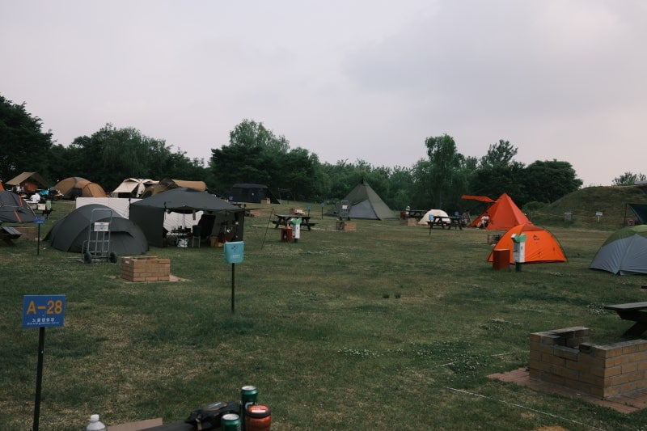
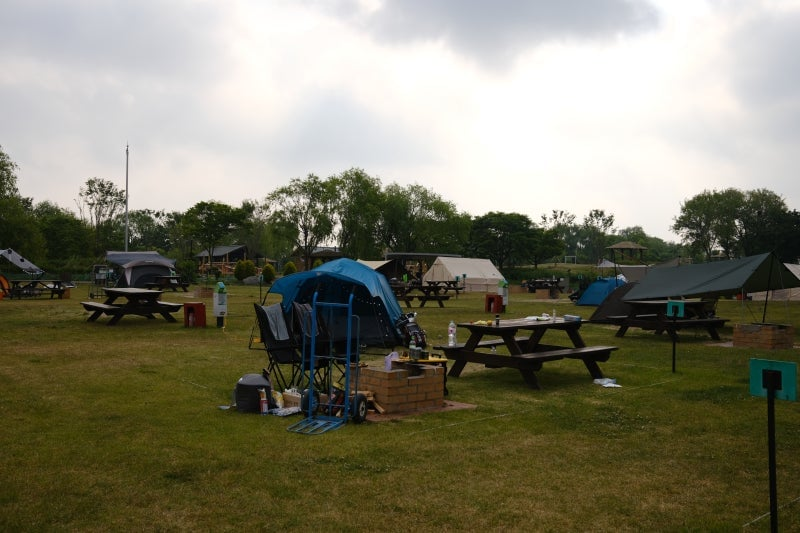

아침에 일어날때
밤에는 고기구워먹고 낭만있고 좋은데
아침에 일어나면
이거 다 치우고 들고 나가야 한다는 생각에 현타옴
호텔에서 숙박했다면 개운하게 목욕이나 샤워 편하게 할 수 있는데
여기서는 그것도 쉽게 못함
텐트 두세번 하고 이런 현타 겪다보면 그냥 고기집 가서 편하게 고기 구워먹고 호텔에서 자는게 더 낫다는 생각이 듬


아침에 일어날때
밤에는 고기구워먹고 낭만있고 좋은데
아침에 일어나면
이거 다 치우고 들고 나가야 한다는 생각에 현타옴
호텔에서 숙박했다면 개운하게 목욕이나 샤워 편하게 할 수 있는데
여기서는 그것도 쉽게 못함
텐트 두세번 하고 이런 현타 겪다보면 그냥 고기집 가서 편하게 고기 구워먹고 호텔에서 자는게 더 낫다는 생각이 듬
그거 현타면 접어야지
그거까지 캠핑인데
지난 주말에 짐 최소한만 챙겨서 갔다왔는데 아직도 힘듦ㅋㅋㅋㅋ
캠핑 날짜잡았는대 비오면 ㅅㅂ ㅋㅋㅋㅋ
우중캠핑 딱 한번하고 다신 안함
그래서 최대한 가볍게 가야됨.그래야 치울 때 현타가 안 옴
캠핑 철수할때 진짜 개같ㅇ ㅣ힘들지 ㅇㅇ
캠핑 차박 정말싫어 캠핑분위기는 잘만알아보면 편하게 즐길곳많음 차박은 진짜 왜하는지 모름
차박은 간단함 뒷자리접고 매트깔면 끝
차박 자주 다니는데 낭만+간소화 라고 생각함
금요일 퇴근하고 바다가 보이는 차박 가능한곳으로 가서 주차하고 밤바다 구경하면서 간단하게 삼김하나 먹고 차에 깔아둔 에어매트 위에 누워 폰 보다가 자면 딱이더라
난 드라이브 다니는거 좋아해서 차박이 너무 좋더라고
미혼일때 캠핑 자주다녓는데
애낳고 일박캠핑은 진짜 토나옴 ㅋㅋ
진짜 미니멈 이박임
캠핑은 1박 다니는거 아님 ㅋㅋ
이게 캠핑이랑 안맞는사람의 전형적인 특징임ㅋ
이슬 맞은 텐트 걷기 개 찝찝함 군대온거같음
치우는것도 재밌는데
마당딸린 집에 고정 텐트 쳐놓고 캠핑하는게 최고인듯;
그래서 난 글램핑이나 키라반 감
아침에 일어나서 후회하면 캠핑 하지 말아야지
텐트 접어놓고 타프 아래서 라면끓여먹고 커피빨면서 앉아서 쉬다가 읏쌰 집가자 하고 나머지 정리하고 가면 되는거를
걍 캠핑이 안맞는거야 넌 ㅋㅋ
아침에 일어나고 비올때
코펠이랑 버너 이불 텐트빼고 모조리 다이소에서 산다음 올때 쓰봉에 다버리고옴
캠핑은 2박하는게 더 싫던데 그냥 하루밤 빡세게 음식해먹고 집가는게 좋지